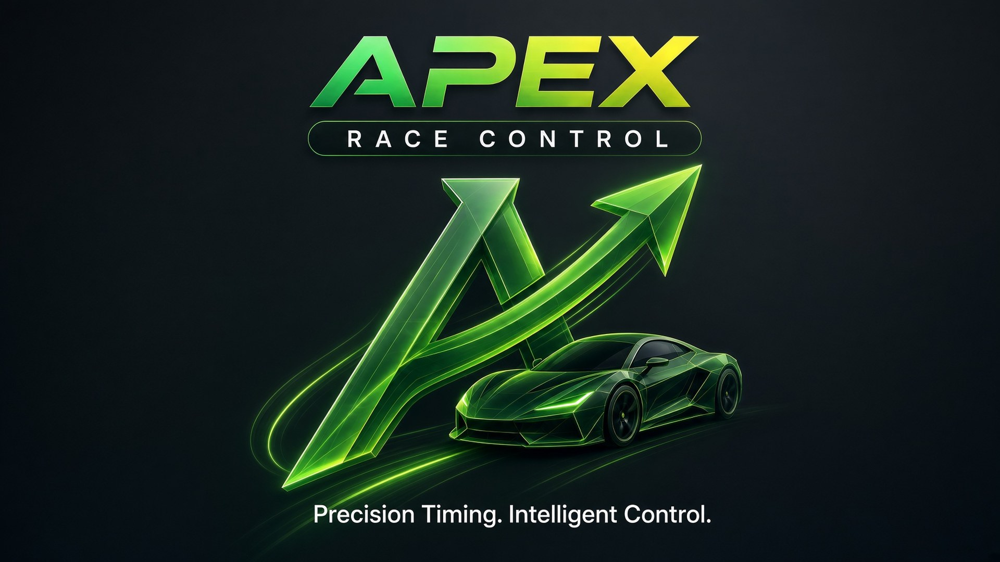
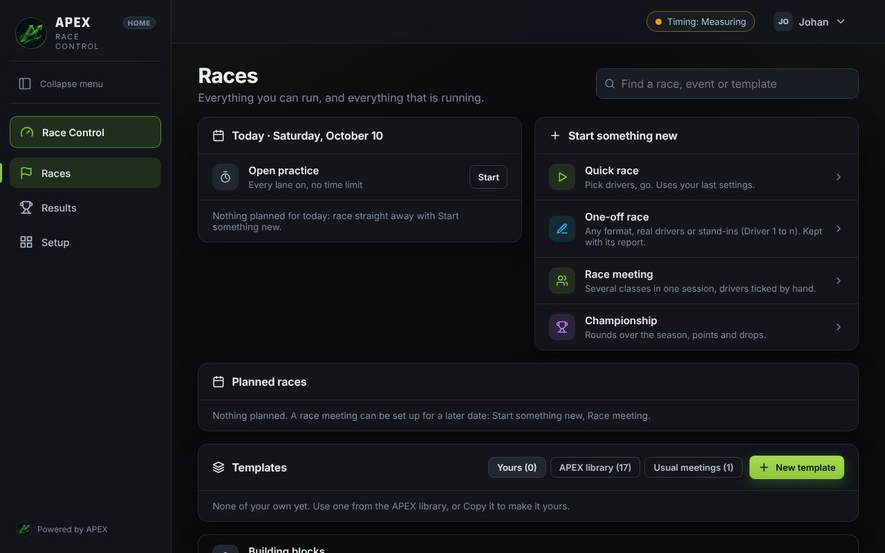
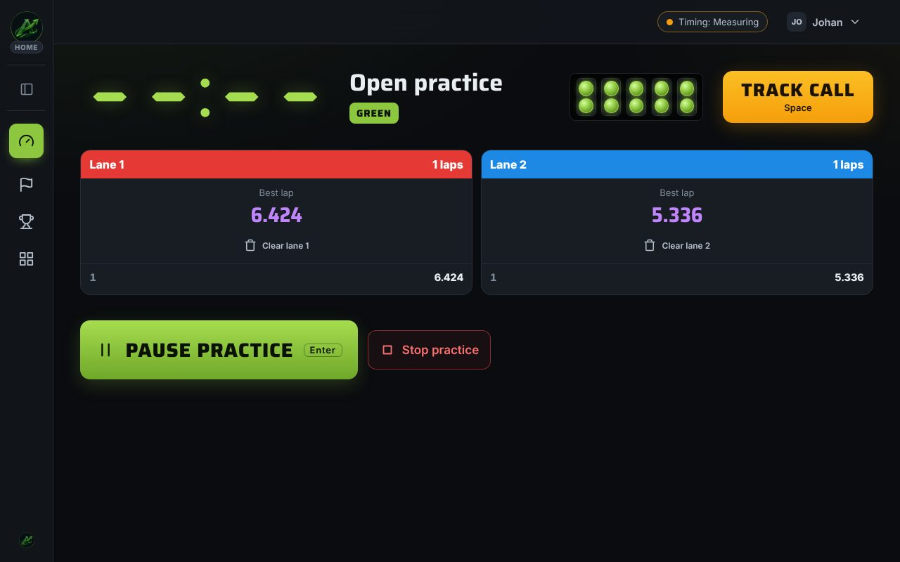
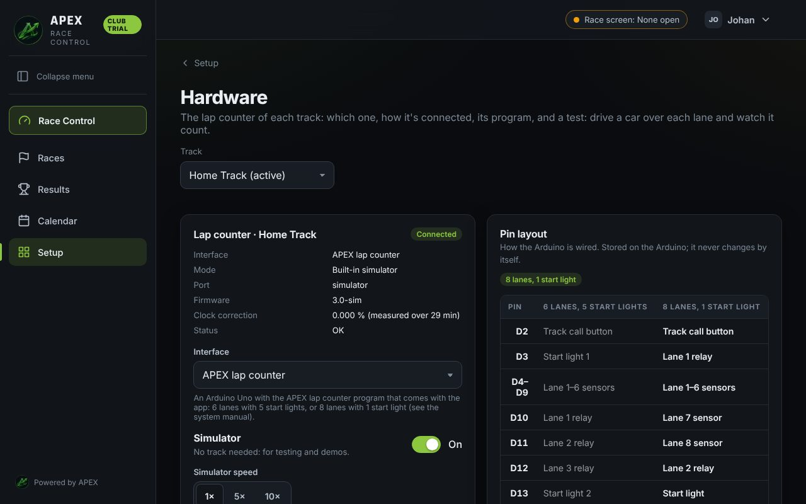
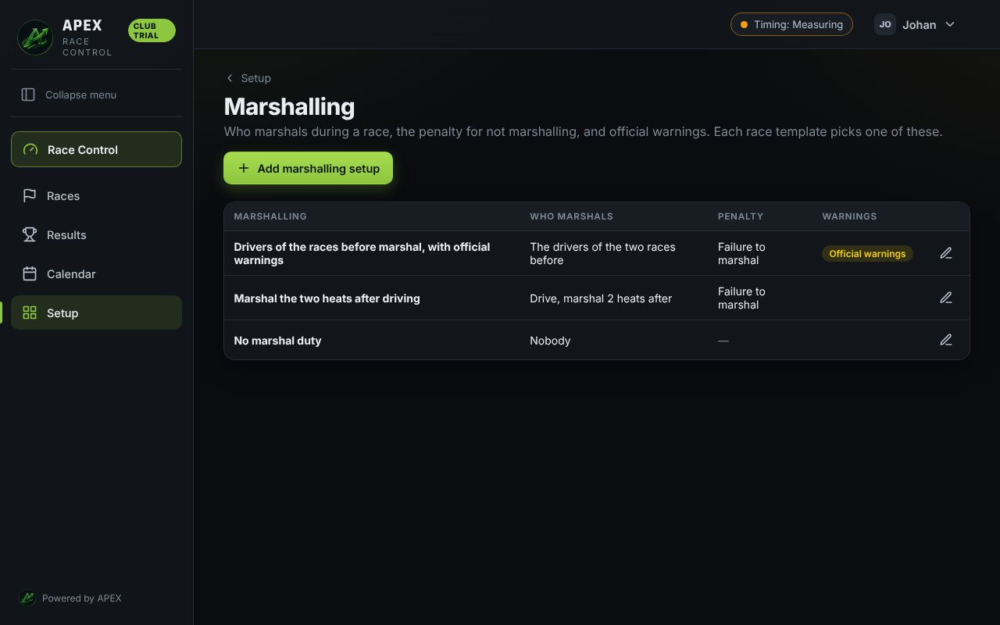
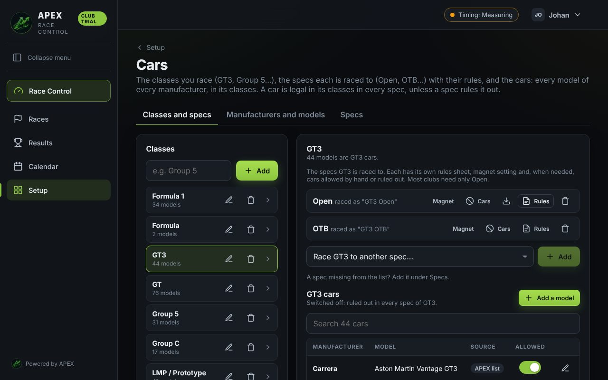
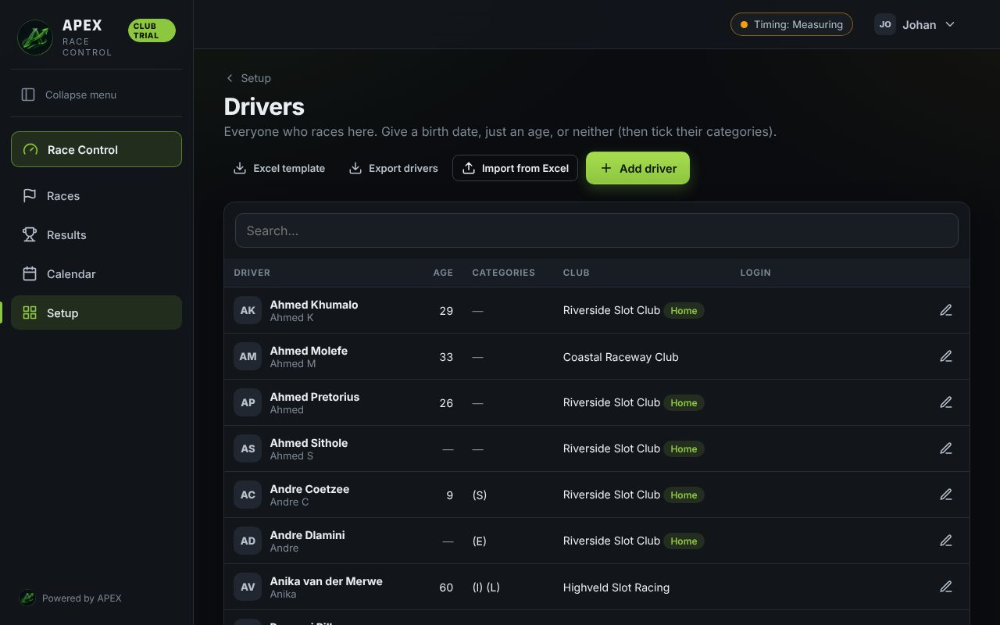
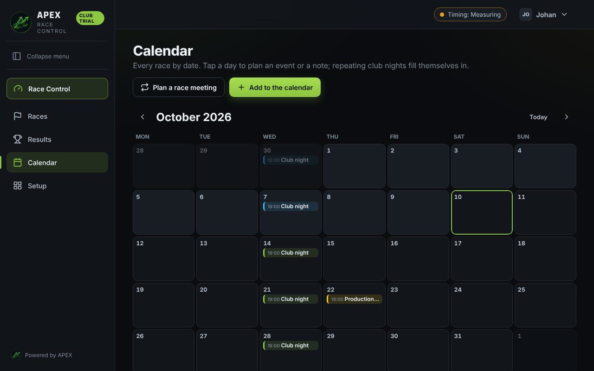

Coming
Slot car timing and race control for the garage track and the club hall. Club testing runs from mid-December 2026.
Keep me postedBy clicking “Keep me posted” your email will only be used to notify you of APEX Race Control product launches and related updates. We will not sell or share it.
Every lap is corrected against the computer’s accurate clock. A typical Arduino lap counter can drift 30 ms on a 6-second lap. APEX brings that down to 0.01 ms per lap with any supported counter, and 0.005 ms with the APEX lap counter (hardware interrupt timestamps). Trackmate and Race Coordinator hardware get the same correction.
APEX learns the track. Partial laps are calculated from the timing data so positions stay fair even when a car is mid-lap when the heat ends or a track call happens. Packs are timed exactly — cars crossing together are timed as precisely as a single car, even with bouncing contacts.
Every lap is saved the moment it happens. A power cut or restart loses nothing. The lap counter times every lap itself and each lap is written immediately.

Every setup is a few short steps with selection tiles. Next stays off until the step is complete and nothing starts blank. Quick race, championship, endurance or event — you are racing in minutes.

The heat clock, running order with lap corrections, heat strip and big Track call button. Works on laptop, tablet or phone. One interruption cuts lane power and stops the clock; restart is controlled when the checks pass.

Scan the QR on the race screen. Your personal report with graphs and class rules appears instantly. No app, no login. Race story shows where every driver stood after each heat.

Seasons with dropped rounds and seeding. One-day events with imported drivers. Multi-day meetings with carry-over to the finals. Clear standings and per-driver reports.

Each lane’s laps and best lap on the screen. Timed practice with a results pause in Club. Drivers can check in and warm up before the first heat.

After every heat the results are clear. Late drivers can join between heats. A driver out leaves an empty lane. Suspend is available when it is safe.

Works with the APEX lap counter, Trackmate, or an Arduino running Race Coordinator’s program. Same clock correction on all of them. Start lights and track power included.

Marshals for every heat, shared out evenly, with a penalty for a missed duty. Keeps the night fair and organised.

Hundreds of cars from the main makes, sorted into classes, in 1:32, 1:24 and 1:43. Home ships with the starter pack; Club can import the full catalogue.

Driver categories for class, rank and age, each with its own results. Import from Excel or from Race Coordinator / TrackMate.

Repeating club meetings and one-off events. The calendar keeps the season organised so everyone knows when the next race is.
The breaks between heats run themselves so the organiser can race too. A click of yours always wins. Handles late joins, early leavers and the normal flow of a club night. Your input always overrides.
Overlays and screens advance with the race on their own. The broadcast director can still take control at any moment. Perfect when you are streaming and racing at the same time. Changes reach the stream live.
During a Track call you can power one lane to try a car without disrupting the running order or the results. The rest of the field stays exactly where it was. Return cars to their markers and continue.
Block or List layouts on the TV. Live order, heat results between heats, and in Club a second screen with its own cards. Preset layouts include Tower and clock, Tower full, Race centre and Enduro tower plus strip. Any number of browsers can show the race screen at the same time.
Build your own layouts. Drag, resize and arrange cards the way your club wants them. Screen Studio lets you run up to six live screens anywhere on the network that advance with the race by themselves.
Create custom stream overlays for OBS, Streamlabs, vMix and others. Live tower, stint results, race results and broadcast widgets. Corner, offset, size and opacity are set inside APEX. Broadcast Studio adds a separate director login and auto-progress.
Every setup is a few short steps with selection tiles. Next stays off until the step is complete, and nothing starts blank. Quick race, championship, endurance, event — the wizard keeps it simple and consistent so you are racing in minutes, not fighting menus. The same pattern is used for drivers, cars, classes and race formats.
Scan a QR code. Your personal report with graphs and class rules. No app, no login, no account.
Drivers scan the race screen QR, pick their name, class and car, and are ready. Club nights stay smooth even with late arrivals.
The same live race screen runs on a TV, a laptop, a tablet or a phone. One layout for the club hall, another in your pocket.
Clear voice announcements of who’s next and key race events — never a driver’s name. Offline, male or female voice.
Rotations put every driver on every lane. Late drivers and early leavers are handled for you, and heats already run never change.
Works with the APEX lap counter, Trackmate, or an Arduino running Race Coordinator’s program. Same clock correction on all of them.
Moving from Race Coordinator or TrackMate? Import your database or exports — drivers, races, results, rotations and the rest.
Questions or club enquiries? Email info@apexslotcarsystems.co.za.